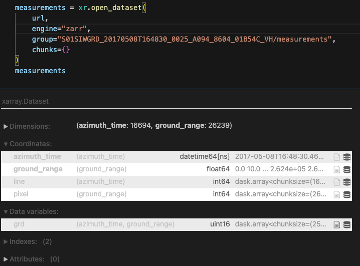
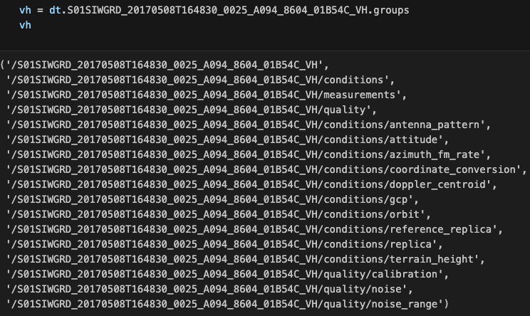
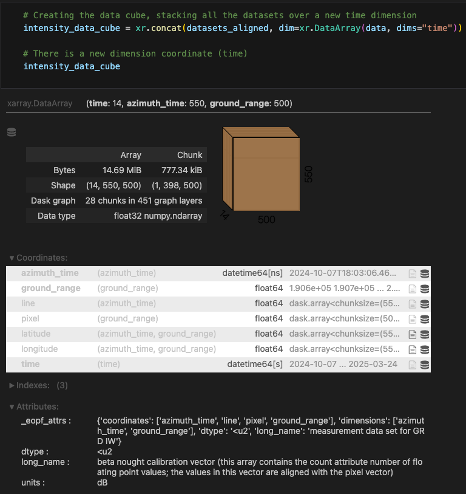
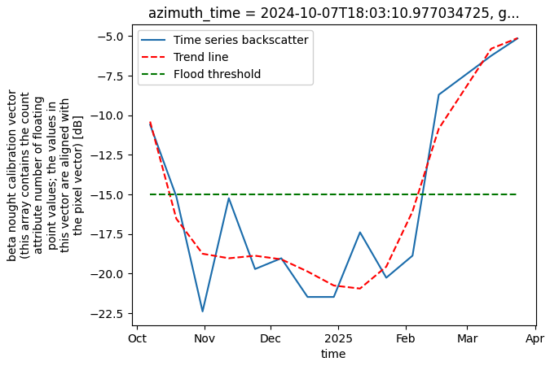
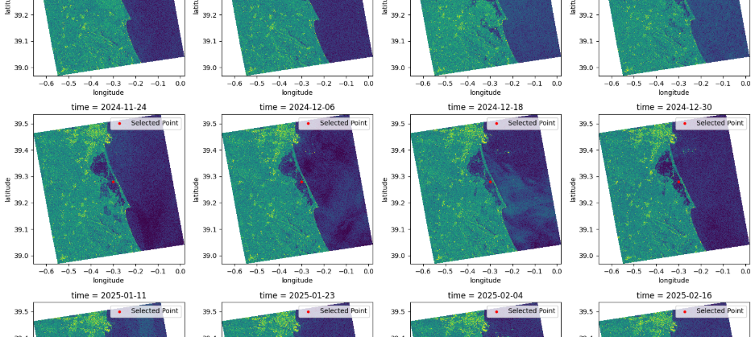
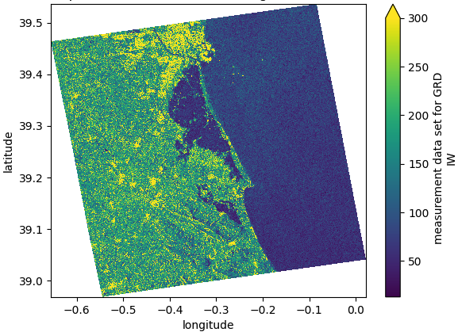
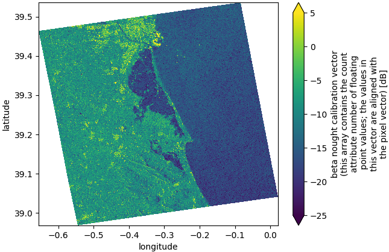
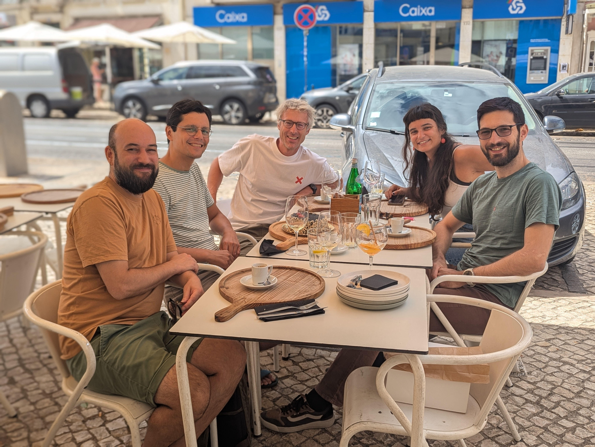

This is my International Summer School report: AI4EO symposium
Scroll down to find more!
Report on the International Summer School: AI4EO Symposium
Introduction
The AI4EO symposium started in 2022 as part of the International AI Future Lab AI4EO. After three successful editions in Munich, the symposium grew international and the 2025 edition took place in Rennes, Brittany, France, on September 11–12.
The symposium was organized by the OBELIX team at IRISA, with support from ESA Phi-lab, CNRS, ISPRS, the Cluster SequoIA, the International AI Future Lab AI4EO, the EMJM Copernicus Master in Digital Earth (which I take part), the Brittany region and the Rennes metropolitan area.
AI enhancing Earth Observation
This event brought together the scientific community (PhD students, postdocs, early-career and senior researchers) and industry partners working with artificial intelligence for Earth observation (AI4EO). Over two days, the program featured research highlights, invited talks, poster and oral sessions, panel discussions and social events.

- Loading just this

- , rather than all these!
Valencia flood user case
In September 2024, heavy rainfall caused severe flooding in Valencia, Spain. The event was chosen as a case study to test cloud-native SAR workflows. For the analysis, I worked with 14 Sentinel-1 GRD acquisitions spanning the pre-flood, flood, and post-flood phases. Traditionally, this would involve downloading and managing 14 SAFE files. Instead, using Zarr allowed me to directly access cloud-hosted arrays. By leveraging xarray and xarray-sentinel, I constructed a time series dataset. Intensity backscatter values were compared across dates to detect flooded areas:
- Low backscatter (dark values) indicated smooth water surfaces
- Higher values represented urban structures, vegetation, or dry land
- Avoid downloading bulky files
By stacking datasets along a new time dimension, it was possible to observe how floodwaters expanded and receded during the event. While this workflow did not aim to produce an official flood map, it demonstrated how Zarr lowers the entry barrier for building multi-temporal SAR analyses.

- Stacked datasets over a new time dimension

- Analysing the flood evolution over a known point

- Plotting of msot of the intensity images
Technical challenges
One challenge was coregistration. Sentinel-1 GRD acquisitions do not naturally align in shape or dimension values, which complicates stacking into a single time series. While traditional SAR software (e.g. SNAP) handles this automatically, no Python library currently supports coregistration of Zarr-based data. To address this, I implemented a DIY coregistration approach using xarray, which allowed me to align datasets sufficiently for exploratory analysis. This highlighted both the flexibility of Zarr and the need for continued tool development in the ecosystem.

- Raw values

- Intensity backscatter
Advantages and Limitations
Advantages of using Zarr for SAR workflows:
- Faster processing compared to traditional desktop software (e.g., SNAP)
- Cloud-native storage and direct access to relevant variables
- Seamless integration with Python libraries (xarray, dask)
Current limitations:
- Limited availability of Sentinel-1 GRD Zarr datasets in public STAC catalogs
- Restricted set of SAR operations supported in Python libraries
- Lack of built-in coregistration tools for Zarr
Workarounds include requesting data via the EOPF sample service or converting SAFE products to Zarr format independently using the EOPF CPM tool .
Outlook
The migration of Sentinel-1 data to Zarr represents an important step toward cloud-native SAR processing. Open-source libraries such as sarsen are already expanding the available workflows, progressively replicating operations traditionally performed in SNAP.
Although not all functionalities are yet available, the direction is clear: Zarr enables faster, more flexible, and scalable analysis directly in Python environments. This has significant implications for disaster monitoring, where rapid access to data is critical.
Personal reflection
Through this internship, I gained hands-on experience with Zarr, SAR data handling, and cloud-native workflows. Starting with EOPF 101, I progressed from a beginner to building a complete time series analysis workflow applied to a real-world disaster case.
This project allowed me to contribute to the early stages of cloud-native SAR processing and highlighted the importance of open-source collaboration. The ongoing development of the EOPF ecosystem demonstrates how collective efforts can reshape Earth Observation workflows — and being part of this process was both valuable and motivating.
